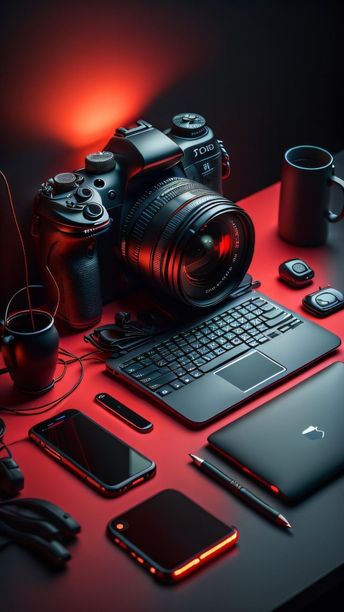

Mes Passions
Ce qui me fait vibrer, m'inspire et nourrit ma créativité au quotidien.

01
Le Code Créatif
Plus qu'un métier, c'est pour moi un moyen d'expression. J'adore explorer de nouvelles bibliothèques, contribuer à des projets open-source et transformer des idées abstraites en interfaces interactives fluides.

02
Photographie Urbaine
Capturer l'instant, jouer avec la lumière et les perspectives de la ville. La photographie me permet de voir le monde sous un angle différent, ce qui m'aide énormément dans mon travail de design UI/UX.

03
Astronomie
Rien n'est plus inspirant que l'immensité du cosmos. Observer les étoiles me rappelle l'importance de rester curieux et de toujours chercher à comprendre les systèmes complexes qui nous entourent.